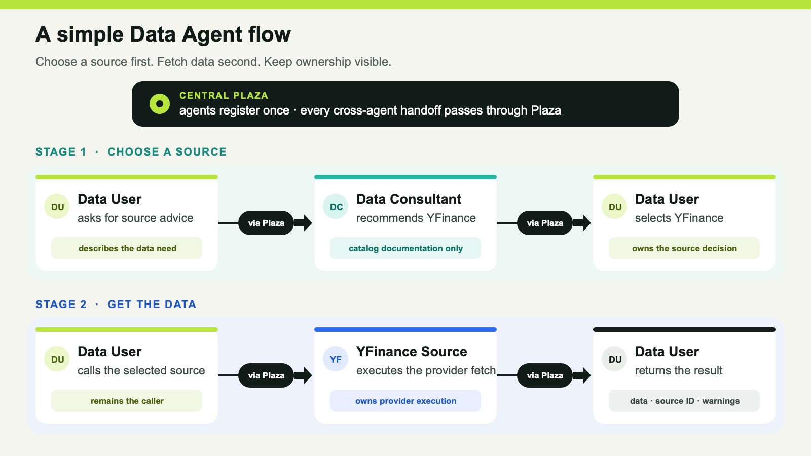
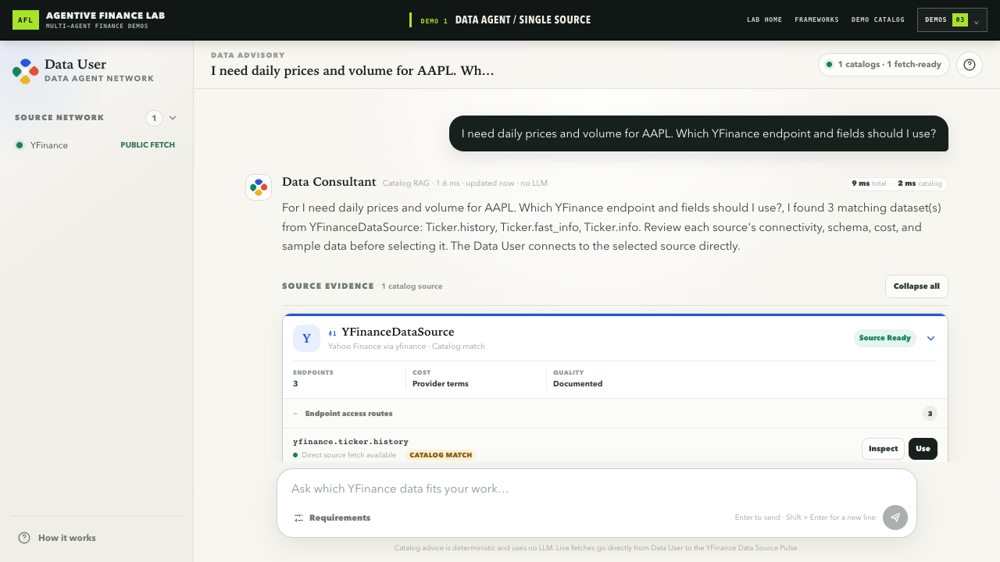

AGENTIVE FINANCE LAB · EPISODE 1
MCP 解决了工具访问的标准化问题，Skills 把可复用的操作方法整理成指令与流程。但金融应用扩展到行情、基本面、公告、宏观数据、风险和内部组合数据后，新的瓶颈是：谁理解来源，谁做选择，谁执行，以及失败时谁能解释清楚。
把所有能力平铺成一个巨大目录，会让模型先处理大量无关定义；把它们藏进一个 fetch_everything(spec)，又会遮住来源选择、字段映射、权限与错误边界。

图 1：先选择来源，再取得数据。Plaza 协调交接，但不成为数据提供方。
Data User（数据用户）负责需求和最终来源调用；Data Consultant（数据顾问）只根据同步到内存的目录文档给出确定性建议；YFinance Data Source（数据源）拥有端点规范和 data_fetch 执行。
三者注册到进程内的 Plaza。Plaza 提供注册、发现、解析和请求/返回路径，但不解释、合并、缓存或代理供应商结果。
阶段一：选择来源
Data User → Plaza → Data Consultant:data_advice → YFinance 目录建议
这里保留了 catalog_rag 标签，但 lite 版本没有调用大语言模型生成答案；它执行的是对同步文档的确定性检索。
阶段二：取得数据
Data User → Plaza → YFinance Data Source:data_fetch → 结果与错误边界
Data Consultant 不接收供应商结果。它负责“哪个来源和端点适合”，而不是成为隐藏的数据代理。
一次 AAPL 日线请求涉及需求理解、来源选择、参数、认证、供应商调用与失败解释。静默切换来源还可能改变字段定义、复权方式、时间点、权限和允许用途。因此，本演示不使用运行时假数据、缓存结果、测试夹具或其他来源掩盖失败。
这套拆分证明的是可检查性，而不是收益：谁理解需求，谁掌握目录，谁触及供应商，失败发生在哪个边界。它不声称多代理会带来更好的预测、更高回报或更准确的市场数据。
2026 年 8 月 28 日（Asia/Taipei）的本地 Demo 1 捕捉只包括：Data User 提问、Data Consultant 返回 YFinance 目录建议、选择 yfinance.ticker.history、Data User 通过 Plaza 发起 data_fetch，以及 YFinance 返回 23 行规范化结果。没有打开或执行 Alpha Vantage、FRED，也没有把当次市场数值包装成投资结论。

图 2：本次本地捕捉中的目录建议画面。后续 data_fetch 由 Data User 直接调用 YFinance Data Source。
数据源代理可以在自身边界内暴露精简 MCP 能力；数据顾问也可以使用 Skill 执行一致的评估流程。协调层补充的是责任：哪个专业角色拥有任务，如何找到它，以及请求和结果如何在不隐藏来源的情况下移动。
Agentive Finance Lab 是从 FinMAS——原始完整金融多代理应用——缩减而来的公开可运行示范。Prompits、Phemacast 和 Attas 由 Retis AI Pte Ltd 所有。
当一次金融数据请求失败时，应该由用户侧代理、来源选择专家，还是具体数据源来解释？在允许切换供应商之前，你会要求系统保留哪些证据？
原始英文文章（已验证）
https://agentivefinancelab.substack.com/p/mcp-and-skills-hit-their-limits-in
开源仓库（已验证）
https://github.com/alvincho/agentive-finance-lab